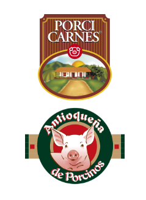

  <footer class="footer_area section_padding_130_0 footer" id="footer">
    <div class="container">
      <div class="row">
        <!-- Single Widget-->
        <div class=" col-4 col-xs-6">
          <div class="single-footer-widget section_padding_0_130">
            <!-- Footer Logo-->
            <div class="footer-logo mb-3"></div>
              
          </div>
        </div>
        <div class="col-4 col-xs-6" style="margin: auto;">
          <div class="single-footer-widget section_padding_0_130">
            <!-- Footer Logo-->
            
            <div class="footer-logo mb-3"></div>
            <h5 class="widget-title">Acerca de</h5>
            <p style="text-align: justify;">Esta página es un Manual de Usuario, que ayudará a los usuarios del aplicativo a comprender su funcionamiento.</p>
            <!-- Copywrite Text-->
            <div class="copywrite-text mb-5" >
              <p class="mb-0" >Hecho<i class="lni-heart mr-1"></i>por<a class="ml-1" href="https://wrapbootstrap.com/user/DesigningWorld">Porcicarnes</a></p>
            </div>
            <!-- Footer Social Area-->
            <div class="footer_social_area"><a href="https://www.facebook.com/porcicarnes.co/" data-toggle="tooltip" data-placement="top" title="" data-original-title="Facebook"><i class="fa fa-facebook" style="color: rgb(126, 50, 41)"></i></a><a href="https://www.instagram.com/porcicarnes.co" data-toggle="tooltip" data-placement="top" title="" data-original-title="Instagram"><i class="fa fa-instagram" style="color: rgb(126, 50, 41)"></i></a></div>
          </div>
        </div>
        <!-- Single Widget-->
      
        <!-- Single Widget-->
        <div class="col-4  col-xs-6" style="margin-top: 54px;">
          <div class="single-footer-widget section_padding_0_130">
            <!-- Widget Title-->
            <h5 class="widget-title">Contacto</h5>
            <!-- Footer Menu-->
            <div class="footer_menu">
              <ul>
                <li><a href="https://g.page/porcicarnes-colombia?share">Calle 41 Sur No. 80 -18 Corregimiento San Antonio de Prado Medellín - Colombia</a></li>
                <li>+57 (604) 444 5617</li>
                <li>recepcion@porcicarnes.com</li>
                
              </ul>
            </div>
          </div>
        </div>
      </div>
    </div>
    <div class="text-center p-3 text-light copyright"  >
      © 2020 Copyright:
      <a class="text-light" href="https://www.porcicarnes.com/">Porcicarnes</a>
    </div>
</footer>
